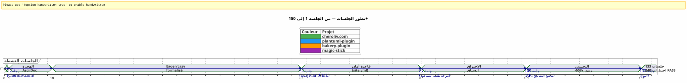
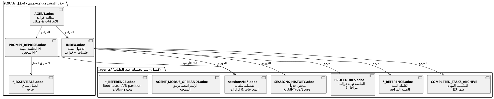

إدارة وكيل ذكاء اصطناعي باستخدام AsciiDoc : استراتيجيتي المتحمسة/المتأخرة لجلسات Opencode خالية من تسرب السياق
نُشر في 24 April 2026
ملخص
عند العمل مع وكيل ذكاء اصطناعي مثل Opencode على مشاريع معقدة عبر جلسات متعددة، نواجه مشكلة أساسية :تسرب السياق. الوكيل لا يتذكر الجلسة السابقة. كل ما تم شرحه له — الهندسة، الاتفاقيات، حالة قائمة المهام — مفقود. إعادة بناء هذا السياق في كل جلسة مكلفة وبطيئة ومصدرًا للأخطاء.
يستعرض هذا المقال الاستراتيجية المصنوعة يدويا التي بنَيْتُها لحل هذه المشكلة : نظام حوكمة مستدام يعتمد على ملفات AsciiDoc، مع ثنائيةمتحمس/كسولتحسين استهلاك رمز السياق، وواحدةالإجراء الحتمي لإنهاء الجلسةلضمان الاستمرارية
المشهد: الاثنين 21 أبريل، 9:00
أعيد فتح Opencode لاستئناف إضافة Gradle الخاصة بي`plantuml-plugin`. مساء أمس قضيت ثلاث ساعات أتحدث مع وكيل هندسة مجمع مفاتيح API - التناوب الدوراني، إدارة الحصص، الاحتياطي التلقائي. هذا الصباح، الوكيل يحدق بي بعيون سمكة حمراء.
I cannot see any French text to translate. If you provide the source text, I will gladly translate it while preserving all back‑tick code spans exactly as requested. مرحبًا، أنا مساعدك Opencode. كيف يمكنني مساعدتك اليوم؟ __
لا — آه نعم, مجموعة مفاتيح API, كنا في بنية YAML. لا — انتبه,PlantumlManager`est كائن كوتولين Singleton، ليست فئة. لا — لا، نحن قررنا أمس أن`SyntaxValidationResult`بقيت فئة sealed مدمجة في`PlantumlService.
كل شيء يجب إعادة صنعه. أو بالأحرى: كل شيء يجب إعادة شرحه. سأقضي العشرين دقيقة الأولى من جلستي في استعادة سياق كان الوكيل قد امتلكه أمس. عشرون دقيقة من الرموز المحترقة. عشرون دقيقة حيث يمكنني أن أكتب كودًا، لكنني أقوم بعمل تعليمي إلزامي.
هذا ليس عطلًا في Opencode. هذا هو الجوهر نفسه للنماذج اللغوية الكبيرة الحوارية: بين جلستين، تكون الذاكرة العاملةمحو بالكامل. الوكيل لا يتذكر المهمة السابقة، والقرارات المتخذة، والفخاخ التي تم تحديدها، والكود الذي كتبناه معًا.
لقد عاش ذلك عشرات المرات. في أربعة مشاريع متزامنة. مع جلسات تتوالى على أسابيع. لقد حسبت: في المتوسط،من 30 إلى 40٪ من وقت الجلسةكان مخصصًا لإعادة صياغة سياق الوكيل. في الجلسة 87 من المشروع`plantuml-plugin`, نَهَرْتُ. لم أكن أتحمل أن أعيد الشرح للمرة العاشرة أن`AttemptEntry`هي فئة بيانات على مستوى أعلى في`DiagramProcessor.kt`(No visible output)
كنت بحاجة إلى نظام، وليس مجرد اختراق، بل حوكمة حقيقية.
التكوين: من الفوضى إلى المنهج
الجلسات الأولى: عصر الظلام
مشروعي الأول مع Opencode,plantuml-plugin, بدأ بدون أي حوكمة. أطرح سؤالًا، يجيب الوكيل، نكرر، تنتهي الجلسة، وفي اليوم التالي نبدأ من الصفر. كانت الجلسة 1، ثم الجلسة 2، ثم الجلسة 3… حتى الجلسة 62 حيث أدركت أنني ضيعت الساعات المتراكمة في إعادة شرح نفس البنية.
في الجلسة 62، الأرقام موجودة :198 اختبار الوحدة ينجح, 42 اختبارًا وظيفيًّا تم التحقق منه, يعمل البرنامج. لكن التكلفة المعرفية لا تُطاق. تبدأ كل جلسة جديدة بمونولوج مدته zwanzig دقيقة حول بنية المشروع.
الحلقة الخاصة بـ site.yml المدمّرة (Session 2, bakery-plugin)
الطريقة تنشأ أيضًا من كارثة. على المشروع`bakery-gradle`, في الجلسة 2, أطلب من الوكيل تعديل الملف`site.yml`. الوكيل, بدون التحقق مما إذا كان الملف خاضعًا لنظام إدارة الإصدارات, يفعل واحدًا`Write`الذي يكتب فوق المحتوى. النتيجة: يتم استبدال الرموز الفعلية (مفاتيح API Firebase، أسرار النشر) بعناصر وهمية. لم يكن الملف في git — كان في`.gitignore`لحماية الأسرار
بدون نسخة احتياطية. بدون`git restore`ممكن. أنا عالق. يجب أن أعيد بناء ملف الإعداد يدويًا، وأجد الرموز في مديري كلمات المرور، وأعيد تجميع كل شيء.
من هذه الإحباط تنشأ الـالقاعدة المطلقة 1b:
(empty) لا تسحق أبدًاملف إعدادات مع`Write`كامل عندما واحد`Edit`الجزء الجزئي يكفيلا تستبدل أبدًاالقيم الحساسة بالقيم الوهميةتحقق من git check-ignore و `git ls-filesقبل أي تعديل. __
هذه القاعدة محفورة اليوم في الرخام من جميع ملفاتي`AGENT.adoc` et `INDEX.adoc`من بين أربعة مشاريع، نشأت بسبب خطأ حقيقي كلفني ساعة من العمل اليدوي.
الهجرة من Markdown إلى AsciiDoc (الجلسة 1، cheroliv.com)
25 أبريل 2026، على`cheroliv.com`, je prends une décision radicale : convertir l’intégralité de la gouvernance de Markdown vers AsciiDoc. Ce n’est pas esthétique. C’est fonctionnel. AsciiDoc offre une structure sémantique que les LLM lisent mieux : sections hiérarchiques, tableaux typés, admonitions (NOTE, WARNING, CAUTION), سمات المستند القابلة للقراءة آليًا.
الجلسة 1 من`cheroliv.com`نظّم الهيكل :
-
التحويل من`AGENTS.md` en
AGENT.adoc -
إنشاء الوكلاء المتخصصين :`CODER.adoc`,
SCRUM_MASTER.adoc,PLANTUML_DESIGNER.adoc -
إنشاء هيكل Eager/Lazy :`INDEX.adoc`,
SESSIONS_HISTORY.adoc,AGENT_SESSION_MANAGER.adoc,SESSION_CHECKLIST.adoc,PROCEDURES.adoc
التزام واحد :`90975e9 refactor: migrate agent governance from Markdown to AsciiDoc`. و الموقع يستمر في العمل.

الخط الزمني أعلاه يوضح التقدم الحقيقي. نقطة التحول هي الجلسة 87 : هذا هو المكان الذي يتجاوز فيه استياء إعادة السياق المتكرر عتبة التحمل، وتصبح الطريقة المتحمسة/الكسول لا مجرد فكرة بل ضرورة.
الاستراتيجية: eager/lazy في العمق
الفلسفة : الكاش المعلوماتي المطبق على الإدراك
منهجي مستوحى مباشرةً من إدارة التخزين المؤقت للحاسوب. كل ما هوحرج ومستخدم بشكل متكرريجب أن يكون متاحًا فورًا (متحمس). كل ما هوسياقي أو كبير الحجميجب تحميله عند الطلبكسول).
| متحمس (لوحة التحكم) | كسول (دليل المالك) | |
|---|---|---|
الحجم |
(Empty) |
غير محدود, مفصل |
تحميل |
Auto، في بداية الجلسة |
بناء على طلب الوكيل |
المحتوى |
القواعد المطلقة، المهمة الجارية، الحالة الحرجة |
أرشيفات الجلسات، التاريخ الكامل، الإجراءات التفصيلية، المراجع التقنية |
دور |
وجه الوكيل فوراً |
الرد على أسئلة السياق العميق |
الملفات المتحمسة : لوحة التحكم
هذه الملفات تعيش في جذر كل مشروع وتحمَّل تلقائيًا بواسطة الوكيل في بداية كل جلسة. إنهم يشكلونلوحة التحكم-- informazioni حرجة، مُتاح فوراً.

AGENT.adocالملف الرئيسي. على`cheroliv.com`, يحتوي على 200 سطرًا ويحتوي :
-
القواعد المطلقة للمشروع (لا`rm`بدون تأكيد)
-
هيكل المشروع وقواعد الكود
-
الأوامر الأساسية (
./gradlew serve,./gradlew test) -
الملاحم و قائمة تراكم المنتج (قصص المستخدمين المرتبة)
-
معايير الجودة المتقاطعة (الوصولية، المتجاوب، التوافق)
على`bakery-plugin`, القاعدة 0 مختلفة :./gradlew -q publishToMavenLocal` ضروري بعد كل تعديل في كود المصدر. لأن اختبار الإضافة دون إعادة نشر ملف JAR المحلي استغرق مني ساعة لتصحيح كود لم يُحزم بعد.
PROMPT_REPRISE.adoc-- مهمة الجلسة الجارية. يتم تحديثه في نهاية كل جلسة، وهو يحتوي على:
-
رقم الجلسة والمهمة ذات الأولوية
-
ملخص الجلسة السابقة (ما تم وما يبقى للقيام به)
-
معايير القبول للجلسة الحالية
-
التذكيرات التقنية المحددة
.agents/INDEX.adoc-- نقطة الدخول. تلخص القواعد المطلقة، والجلسات الأخيرة، وأهم من ذلكمحفظة المشاريعمُدارة بنفس المنهجية. حتى الآن، هناك خمسة مشاريع مدرجة فيها :
----
----
| magic-stick | Session 23 | SCRIPT_VERIFICATION.adoc | 2026-04-27 |
| bakery-gradle | Session 11 | TEST_COVERAGE_ANALYSIS | 2026-04-27 |
| cheroliv.com | Session 9 | TEST_COVERAGE_ANALYSIS | 2026-04-27 |
| plantuml-gradle| Session 133| TEST_COVERAGE_ANALYSIS | 2026-04-23 |
| jhipster-gradle-plugins | Session 1 | TEST_COVERAGE_ANALYSIS | 2026-04-28 |
----
[No output]`*_ESSENTIALS.adoc`** -- إضافة حديثة (الجلسة 109، ملحق PlantUML) لتحسين السياق المتعطش أكثر. بدلاً من تحميل 200 سطرًا من سياق العمل على حوض مفاتيح API، أقوم بتحميل 50 سطرًا من الأساسيات، وتبقى الـ 150 سطرًا الأخرى في وضع LAZY داخل`*_REFERENCE.adoc`.
النتيجة المقاسة : مرور من**~25k tokens EAGER إلى ~10k tokens**(ربح 60٪). الوكيل لم يعد بحاجة إلى التذكيرات التي تستهلك الطاقة
==== الحلقة المفقودة : `opencode.json
عليّ أن أقول لكم شيئًا كدت أن أنسى توثيقه. في أعلى كل هذه الملفات .adoc، يوجد ملف JSON صغير جدًا لا يعمل أي شيء بدونه. اسمه`opencode.json`وهو يشكل ستة أسطر. حرفيًا ستة أسطر.
[source,json]
----
{
"$schema": "https://opencode.ai/config.json",
"instructions": [
"AGENT.adoc"
]
}
----
هذا هو الملف الذي يقول إلى Opencode : « عند بدء التشغيل، تحميل`AGENT.adoc`أوما تلقائيًا." دونه، الوكيل صفحة بيضاء تمامًا كما وصفته في بداية المقالة. معه، يكون لدى الوكيل بالفعل القواعد المطلقة، وهندسة المشروع، والأوامر الأساسية في يده — قبل أن أقول حتى مرحباً.
اكتشفتُ أهمية هذا الملف بالصدفة. على`bakery-plugin`, لم يكن موجودًا. كنت أتساءل لماذا كان الوكيل بشكل منتظم أكثر «ضائع» في هذا المشروع مقارنة بالآخرين. كانت القواعد المطلقة جيدًا في`AGENT.adoc`— لكن`AGENT.adoc`لم يكن مشحونًا قط. كان الوكيل يقرأ فقط ما طلبت منه أن يقرأه، يدويًا، في كل جلسة. كانت الجلسة رقم 11 من`bakery-plugin`عندما أدركت غياب ال`opencode.json`. لقد أنشأته — وبدأت الجلسة 12 مثل باقي الجلسات.
هذا الملف أصبح واضحًا جدًا بالنسبة لي الآن إلى درجة أنني لم أعد أفكر به إطلاقًا. خطأ كلاسيكي للمطور الذي يعرف أداته أكثر من اللازم. اليوم، أقوم بإنشائه بشكلٍ منهجي *avant*`AGENT.adoc`. هذا هو الحجر الأول
==== ثنائية `INDEX.adoc
نقطة دقيقة أخرى تستحق أن تُوضَّح :`INDEX.adoc`يعيش في`.agents/`— ملف قدمته على أنه LAZY. ومع ذلك، أدرجته كـ EAGER في جميع جدولي. هناك توتر واضح هنا.
واقع الميدان : الملفات`.agents/INDEX.adoc`يتم تحميلها تلقائيًا في بداية الجلسة، على قدم المساواة مع`AGENT.adoc` et `PROMPT_REPRISE.adoc`. هم في`.agents/`لأسباب تنظيمية — لا تغزو الجذر — لكن سلوكهم EAGER
على`plantuml-plugin`, `INDEX.adoc`يحتوي على 200 سطرًا ويحتوي على القواعد المطلقة *المكتملة* مع تاريخها (دروس الجلسات الماضية)، وإيبيكس مع الدرجات، ومحفظة المشاريع. إنه المستند الذي يستشيره الوكيل لمعرفة « أين نحن الآن ». Sur`bakery-plugin`، يحتوي على 150 سطرًا مع خريطة الطريق والجلسات الأخيرة.
التكرار الطوعي بين`AGENT.adoc` et `INDEX.adoc`قد يثير الدهشة. القواعد المطلقة موجودة في كلاهما. لماذا؟ لأنها تلعب دورين مختلفين: في`AGENT.adoc`, إنها *مفسّرة* (حكاية القصة للـقاعدة، الدرس المستفاد) ; في`INDEX.adoc`, همّ *تنفيذيّات* (القاعدة العارية, بدون مبرر, لاستشارة سريعة). الوكيل يقرأ`AGENT.adoc`مرّة واحدة *للفهم* ؛ يعيد القراءة`INDEX.adoc`في كل جلسة لـ *التطبيق*. استخدامان، صيغتان.
[plantuml, format=svg, id=diag-dualite-agent-index, alt="Comparaison entre AGENT.adoc (narratif) et INDEX.adoc (exécutif)"]
----
@startuml
skinparam backgroundColor #FEFEFE
skinparam defaultTextAlignment center
title الثنائية AGENT.adoc ←→ INDEX.adoc
left to right direction
rectangle "AGENT.adoc\n(الجذر — EAGER)" as AGENT #E3F2FD {
rectangle "📖 **التنسيق السردي**\nالسرد القصصي للقاعدة\nالدرس المستفاد، السياق" as NARR
rectangle "🏗️ **البنية الكاملة**\nالهيكل المشروع، المكونات\nBacklog مفصل US" as ARCHI
rectangle "📋 **القواعد التوضيحية**\nلماذا توجد القاعدة\nتاريخ الحادث" as EXPL
}
rectangle "INDEX.adoc\n(.agents/ — EAGER)" as INDEX #E8F5E9 {
rectangle "⚡ **التنسيق التنفيذي**\nالقاعدة العارية، بدون تبرير\nاستشارة سريعة" as EXEC
rectangle "📊 **Roadmap & EPICs**\nالجدول الملخص\nProgression, Score, الأولوية" as ROAD
rectangle "🌐 **مجموعة المشاريع**\nرؤية عرضية\n5 مشاريع متزامنة" as PORT
}
AGENT --> INDEX : "Agent lit AGENT.adoc\n1 مرة ل **لفهم**"
INDEX --> AGENT : "Agent relit INDEX.adoc\nكل session ل **لتطبيق**"
note bottom of AGENT
الحد الأقصى للحجم: 200 سطر
end note
note bottom of INDEX
الحد الأقصى للحجم: 200 سطر
Source de vérité en cas de divergence
end note
@enduml
----
هذه الزيادة المتعمدة هي خيار تصميم. تستهلك حوالي 50 سطرًا إضافيًا من رموز EAGER المتحمسة — لكنها تضمن أن الوكيل لديه دائمًا القواعد أمامه، حتى في الشكل المختصر الذي يسهّل الامتثال الفوري.
=== ملفات LAZY : دليل المالك
هذه الملفات تعيش في`.agents/`ولا يُقرؤون إلا عندما يحتاج الوكيل إليهم. وهم يمثلون الثروة الحقيقية للطريقة، لأنهم يتراكمون معرفة المشروع دون تلويث السياق الحالي.
[plantuml, format=svg, id=diag-agents-tree, alt="Arborescence complète du dossier .agents/"]
----
@startuml
skinparam folderBackgroundColor #E3F2FD
skinparam folderBorderColor #1565C0
skinparam fileBackgroundColor #FFF3E0
skinparam fileBorderColor #EF6C00
folder ".وكلاء/" as ROOT {
file "INDEX.adoc\n(EAGER -- 200 أسطر)" as IDX #E8F5E9
file "AGENT_SESSION_MANAGER.adoc\n(جلسة القالب)" as ASM
file "SESSION_CHECKLIST.adoc\n(متى تتغير)" as CHK
file "PROCEDURES.adoc\n(6 خطوات + LAZY/EAGER)" as PRO
file "SESSIONS_HISTORY.adoc\n(كل الجلسات)" as HIS
folder "جلسات/" as SESS {
file "1-chore-migration.adoc" as S1
file "109-formalisation-lazy.adoc" as S109 #FFECB3
file "133-epic11-article.adoc" as S133
file "... +130 الآخرين" as SMORE
}
folder "المحفوظات/" as ARCH {
file "COMPLETED_TASKS_2026-04.adoc" as CTA
file "SESSIONS_HISTORY_83-95.adoc" as SHIST
folder "sessions_summaries/" as SUM {
file "SESSION_64_SUMMARY.adoc" as SU64
file "SESSION_73_SUMMARY.adoc" as SU73
file "..." as SUMORE
}
folder "prompts_archive/" as PARCH {
file "PROMPT_REPRISE_S65.adoc" as PR65
file "PROMPT_REPRISE_S75.adoc" as PR75
file "..." as PMORE
}
}
}
IDX --> SESS : "فهرس"
IDX --> HIS : "فهرس"
IDX --> ARCH : "مرجع"
note right of S109
الجلسة 109 =
استراتيجية الصياغة
LAZY/EAGER
الرمز : ~25k → ~10k
end note
@enduml
----
الهيكلية أعلاه تُظهر الهيكل الحقيقي للمجلد`.agents/`علي`plantuml-plugin`، المشروع الأكثر نضجًا. لاحظ العمق في ثلاث طبقات: الملفات الجذرية (البيانات), المجلد`sessions/`(الأرشيفات الزمنية)، و ملف`archives/`(التجميعات والتلخيصات). هذا العمق هو الذي يحول حوكمة ملف TODO البسيط إلى une**ذاكرة تنظيمية كاملة**.
**.agents/sessions/{N}-{titre}.adoc**-- الأرشيفات التفصيلية لكل جلسة. حالياً :
* `plantuml-plugin`:
(Note: a single space, then a colon, then a newline.)**133 جلسة مؤرشفة**من الجلسة 1 إلى 133
* `bakery-plugin`(No output, as there is no text to translate after the colon)**11 جلسات**
* `magic-stick`:**23 جلسات**
* `cheroliv.com`:**9 جلسات رسمية**+ 7 جلسات قبل النظام مُعاد بناؤها بأثر رجعي
كل أرشيف يحتوي على السياق الكامل للجلسة، والقرارات المتخذة، والمشكلات التي واجهتها وحلّها، والأوامر التي تم تنفيذها ومخرجاتها.
**.agents/SESSIONS_HISTORY.adoc**جدول ملخّص لجميع الجلسات مع درجة. مثال على`cheroliv.com`:
----
| -6 | 2025-05 | chore | Initialisation projet Gradle/JBake | 7/10 | 1 | 2026-04-25 | chore | Migration gouvernance agent | 8/10 | 7 | 2026-04-27 | debug/fix | Correction publishSite | 9/10 | 8 | 2026-04-27 | analyse | Analyse article 0108 | 7/10
**.agents/COMPLETED_TASKS_ARCHIVE_{mois}.adoc**-- تم أرشفة المهام المكتملة شهريًا لتجنب إفراط تحميل الباكلوج النشط. عندما تنتهي قصة المستخدم، يتم نقلها إليها. يبقى الباكلوج قابلاً للقراءة: أقصى حد هو 10 عناصر نشطة.
**.agents/PROCEDURES.adoc**-- قوالب مفصلة من الإجراء من انتهاء الجلسة. طويل، لكن قرأ مرة واحدة بواسطة الوكيل عندما يتعلم الطريقة. بعد ذلك، يصبح الإجراء آليًا.
**.agents/AGENT_MODUS_OPERANDI.adoc**الوثائق الاستراتيجية الكاملة. على`plantuml-plugin`, هذا الملف يفعل**900+ أسطر**وهو يُسمى في الواقع`AGENT_METHODOLOGIES.adoc`— غيرت الاسم بين كتابة هذا المقال وتنفيذه الفعلي. هذا النوع من اختلاف التسمية لا مفر منه في نظام صناعي يتطور.الأهم هو اتفاقية التسمية: إذا كان الملف يوثق *الطريقة*، يبدأ بـ`AGENT_`أو بادئة صريحة. هو يوثق منهجية الإيفاج/لايزي، والأنماط الواجب اتباعها، والأنماط الضارّة الواجب تجنّبها. وهو لايزي لأن الوكيل لا يحتاج إلى إعادة قراءة الاستراتيجية بأكملها في كل جلسة، فقط عندما يكون هناك غموض.
**`*_REFERENCE.adoc`المراجع الفنية المحددة للمشروع. على`magic-stick`, ملفّان LAZY كثيفان :
* `AB_PARTITION_REFERENCE.adoc`(147 أسطر) -- البنية لتقسيم أ/ب GPT، النصوص`update-system.sh`, الأحجام المقدّرة, آلية الاسترجاع
* `BOOT_TEST_REFERENCE.adoc`(144 سطر) -- إجراء QEMU + VNC لاختبار تمهيد الـ ISO دون جهاز مادي، قائمة تحقق BIOS/UEFI، قيود CI/CD
على`plantuml-plugin`:
* `ARCHITECTURE.adoc`(134 أسطر) -- هيكل فئات البيانات الـ 11, نقاط الانتباه (مصائد لتجنبها), أوامر الاختبار المحسّنة
* `API_KEY_POOL_REFERENCE.adoc`-- التفاصيل الكاملة لمجموعة المفاتيح (LAZY pendant que`ESSENTIALS`هو متحمس)
== الوكلاء المتخصصون: فريق افتراضي
الإدارة لا تقتصر على ملفات سلبية. لقد قمت بصياغة بعض**أدوار الوكلاء المتخصصين**في ملفات LAZY مخصصة، التي تحدد سير العمل المتوقع حسب نوع المهمة.
|===
|وكيل |ملف |دور |مشروع |**مبرمج** |`CODER.adoc` |تنفيذ FTL/CSS/JS، علامات دلالية، معايير إمكانية الوصول |cheroliv.com |**ماستر سكرام** |`SCRUM_MASTER.adoc` |التخطيط US، تقسيم إلى مهام فرعية، اكتشاف التبعيات |cheroliv.com |**مصمم PlantUML** |`PLANTUML_DESIGNER.adoc` |إنشاء مخططات، صيغة PUML، تكامل JBake |cheroliv.com
|===
الملف`CODER.adoc`على`cheroliv.com`يحتوي على قواعد ملموسة : _واحد`<h1>`لكل صفحة_, _أضف بادئة المسارات مع`${content.rootpath}`_, _إعلان اللغة`<html lang="${content.lang!"fr"}">`هذه الاتفاقيات، التي تُكتب مرة واحدة فقط، يتم احترامها تلقائيًا من قبل الوكيل منذ الجلسة 1.
الملف`SCRUM_MASTER.adoc`تفرض هيكلًا للتسليم:**الهدف**, **مهام**(الإحداثيات مع التعيين),**معايير القبول**, **المخاطر**. عندما أطلب خطة عمل، ينتج الوكيل هذه البنية دون أن أكون قد طلبتها. الحوكمة**البرنامج**الوكيل.
==== عندما يصبح الوكلاء المتخصصون ضروريين
يتبع إنشاء الوكلاء المتخصصين منحًى طبيعياً. في بداية مشروع، أنت لا تحتاج إليها —`AGENT.adoc`يكفي كثيرًا. لكن عندما يزداد المشروع حجمًا (لنفترض، بأكثر من 20 جلسة)، يجب أن يُنبهك إشارتان:
1. الوكيل يخلط بين اتفاقيتين من مجالين مختلفين (مثال: صياغة PlantUML وقواعد CSS)
2. أنت تقضي وقتًا أطول في تصحيح الوكيل على الاتفاقيات التي شرحت له خمس مرات
على`cheroliv.com`, وصل إلى الجلسة...
1. نعم، منذ البداية.
لأنّ هذا المشروع هو موقع ويب يحتوي على ثلاث لغات (FTL، CSS، JS)، ومحتوى AsciiDoc، ورسومات PlantUML — ثلاثة مجالات لا علاقة لها ببعضها البعض. الوكيل CODER يحتاج إلى معرفة أحجام الخطوط و استعلامات الوسائط؛ الوكيل PLANTUML_DESIGNER يحتاج إلى معرفة الصياغة`@startuml`بدون فصل، وكيل CODER كان يعطيني مخططات، والعكس صحيح. الفوضى
على`jhipster-gradle-plugins`, قمت بإنشاء اثنين من الوكلاء المتخصصين المصممين لتطوير مكونات Gradle:`PLUGIN_DEVELOPER.adoc` et `BACKLOG_MANAGER.adoc`. الأول يُرمّز جميع اتفاقيات Kotlin/Gradle (لا`!!`، فئات البيانات للنماذج،`@TaskAction`للمهام). الثاني يعرف أن`persistence`يجب أن يكون مستقرًا قبل أن`assistant`لا يبدأ تطويره — اعتماد حرج في مستودع أحادي.
الخطأ الذي لا ينبغي ارتكابه: إنشاء عدد كبير جدًا من الوكلاء في وقت مبكر.`plantuml-plugin`انتظرت الجلسة 108 قبل أن تُعطى صيغة لوكيل متخصص لمجموعة مفاتيح واجهة برمجة التطبيقات. قبل ذلك، كان سياق الأعمال يقتصر على`AGENT.adoc`. القاعدة التجريبية : الوكيل المتخصص مبرر عندما يتجاوز مجال عمله 100 سطرًا من الوثائق.
==== اتفاقية تسمية الجلسات
تفصيل يبدو تافهاً لكنه يصبح حاسماً عندما نصل إلى 100 جلسة. كيف نسمّي ملفات الأرشيف ?
تعلمت بطريقتي الصعبة أن اتفاقية ضرورية — أربعة مشاريع، أربعة تنسيقات مختلفة في البداية، ولم أعد أستطيع تتبعها. اليوم، الاتفاقية التي استقررت عليها هي:{N}-{type}-{sujet-kebab-case}.adoc
أمثلة ملموسة : * `1-chore-migration-gouvernance-agent.adoc`— الجلسة 1، نوع مهمة * `10-solidification-tests.adoc`— الجلسة 10، من دون نوع صريح (الموضوع كافٍ) * `036-debug-graphify-symlink-epic9.adoc`— الجلسة 36 مع رقم من ثلاثة أرقام للفرز رقم الجلسة هو معيار الفرز الأساسي. المشاريع التي تستخدم أرقامًا من ثلاثة أرقام (001، 036، 133) تتجنب مشكلات الفرز اللُّغوي عندما يتجاوز العدد 99. هذا هو ما أستخدمه الآن على`magic-stick`:`001-init-projet.adoc`, `036-debug-graphify-symlink-epic9.adoc`. النوع اختياري ومشتق من كلمات مفتاحية للجلسة (debug, feature, refactor, docs, chore, test). الموضوع في kebab-case هو الجزء الأكثر أهمية: يجب أن يسمح بالعثور على جلسة دون فتح الملف. إذا كنت تتساءل « ما هي الجلسة التي أصلحنا فيها وقت انتهاء مهلة اختبارات الدمج؟ »، الجواب هو`124-fix-timeout-integration-test.adoc`. للجلسات التاريخية المعاد إنشاؤها (المشاريع التي وُلدت قبل الحوكمة)، أستخدم أرقامًا سالبة. على`cheroliv.com`, الجلسات من -6 إلى 0 تغطي كامل تاريخ ما قبل الحوكمة للمشروع. و بالنسبة للجلسات « غير الموثقة » أو المفقودة، أنشئ إدخالًا في`SESSIONS_HISTORY.adoc`بدون أرشيف مطابق، مع درجة`?`. إنه أكثر صدقًا من التظاهر. [plantuml, format=svg, id=diag-naming-convention, alt="Arbre de décision pour le nommage des fichiers de session"]
@startuml skinparam backgroundColor #FEFEFE skinparam defaultTextAlignment center skinparam wrapWidth 200
title اتفاقية تسمية الجلسات start
:تنتهي الجلسة; note right: Trigger "نهاية الجلسة"
if (Session antérieure\nà la gouvernance ?) then (oui) :رقم NÉGATIF\n-6, -5 … 0; note right: تاريخ\nمُعاد تشكيله :لاحق : إعادة التكوين; else (non) :رقم POSITIF\nعلى 3 أرقام إذا > 99; note right: 001, 036, 133\nللترتيب القاموسي
:كشف **TYPE**; if (Mots-clés trouvés ?) then (oui) :debug / feature / refactor\ndocs / chore / test; else (non) :احذف النوع\n(الموضوع يكفي); endif
:صيغ SUJET بأسلوب kebab-case; note right fix-timeout-integration-test يجب أن يسمح بالعثور على بدون فتح الملف end note endif
note right • 1-chore-migration-gouvernance.adoc • 036-debug-graphify-symlink.adoc • 124-fix-timeout-integration-test.adoc • 133-epic11-article-blog-kg.adoc end note
if (Session documentée ?) then (oui) :إنشاء أرشيف في sessions/; :أضف سطر SESSIONS_HISTORY\n مع النتيجة X/10; else (non) :إضافة سطر SESSIONS_HISTORY\nمع النتيجة ?\nبدون أرشيف; note right: الصدق\nبدلاً من الفراغ endif
stop @enduml
==== TEST_COVERAGE_ANALYSIS.adoc` — الخطوة الخامسة المفصلة الخطوة 5 من إجراء إنهاء الجلسة هي الأكثر غموضًا. تقول « تحديث`TEST_COVERAGE_ANALYSIS.adoc`إذا تم إضافة أو تعديل الاختبارات. » لكن كيف يبدو هذا الملف؟ على`plantuml-plugin`, طور من بضعة أسطر إلى هيكل كامل. هذه هي صيغته المستقرة : [source]
Analyse de Couverture de Tests
Suivi des Tests
Classe de test |
Type |
Tests |
Statut |
Dernière MAJ |
PlantumlServiceTest |
unit |
45/45 |
✅ PASS |
2026-04-23 |
ApiKeyPoolTest |
integration |
15/15 |
✅ PASS |
2026-04-20 |
Historique par Session
| Session | Tests ajoutés | Tests modifiés | Couverture | 133 | 0 | 2 | 100% | 132 | 5 | 0 | 100%
---- الاهتمام ليس بالملف نفسه — بل هو الالتزام بـ تسجيل ما تغير. بدون هذه الخطوة، بعد 50 جلسة، لن تعرف أي اختبار يغطي quoi؟. والوكيل أيضًا لا يعرف. يصبح الملف المصدر الوحيد للحقيقة بشأن تغطية اختبارات المشروع. للمشاريع بدون اختبارات تقليدية (كما`magic-stick`الذي يختبر سكريبتات باش)، يتم استبدال الخطوة 5 بـ`SCRIPT_VERIFICATION.adoc`. الآلية هي نفسها: ملف يتتبع حالة التحقق من صحة النصوص البرمجية. عدّل الخطوة 5 وفقًا لمشروعك، لكن لا تتخطها أبدًا. إنها شبكة الأمان التي تمنع التراجع الصامت. إذا لم يحتوي مشروعك على أي اختبار — ولا اختبارًا وحيدًا، ولا وظيفيًا، ولا نصًا — أنشئ حتى الملف الفارغ مع قسم « المهام: تحديد استراتيجية الاختبار. » هذه علامة مرجعية ستذكّر مستقبلَك أن هذا الموضوع لم يتم معالجته. [plantuml, format=svg, id=diag-session-flow, alt="Flux d’une session type avec Eager/Lazy et agents"] ---- @startuml skinparam backgroundColor #FEFEFE start :بدء الجلسة; note right: الوكيل هو صفحة بيضاء :تحميل EAGER تلقائي; note right * AGENT.adoc (قواعد مطلقة) * PROMPT_REPRISE.adoc (مهمة N) * INDEX.adoc (حالة المشروع) end note if (Mission claire ?) then (oui) :التنفيذ المباشر; else (non) :تحميل LAZY عند الطلب; note right * SESSIONS_HISTORY.adoc (السياق السابق) * sessions/{N-1}-.adoc (القرارات) * *REFERENCE.adoc (الهندسة المعمارية) end note endif :تفويض الوكيل المتخصص ؟; if (CODER ?) then (oui) :يقرأ CODER.adoc; :يتبع الاتفاقيات FTL/CSS; elseif (SCRUM Master ?) then (oui) :يقرأ SCRUM_MASTER.adoc; :هيكل تسليم مفروض; elseif (PlantUML ?) then (oui) :سرير PLANTUML_DESIGNER.adoc; :صيغة PUML + intتكامل; else (non) endif :عمل الجلسة; :نهاية الجلسة (trigger المستخدم); :إجراء 6 خطوات; note right 1. أرشيف الجلسات/N-.adoc 2. تحديث PROMPT_REPRISE.adoc (N+1) 3. تحديث SESSIONS_HISTORY.adoc 4. تحديث INDEX.adoc 5. تحديث TEST_COVERAGE (إن وُجد) 6. تحديث COMPLETED_TASKS_ARCHIVE.adoc end note :قائمة المراجعة [✅] × ٦; stop @enduml ---- يوضح المخطط أعلاه دورة الحياة الكاملة لجلسة. النقطة الرئيسية هي الانقسام بعد التحميل EAGER: إما أن المهمة تكون واضحة بما يكفي للتنفيذ المباشر (في 80٪ من الحالات)، أو يقوم الوكيل بتحميل LAZY لحل الغموض (في 20٪ من الحالات). إنه هذا التمييز الذي يوفر الرموز. == إجراء انتهاء الجلسة: القاعدة الذهبية === لماذا هي لا غنى عنها بدون هذا الإجراء، لا فائدة من استراتيجية Eager/Lazy. هي التي تحول عمل الجلسة إلى معلومات مستمرة. وهي تنفذبناءً على طلب صريح من المستخدم(كلمات مفتاحية: "نهاية الجلسة", "أنا أغادر"، إلخ)، وهيإلزامي-- لا استثناء، لا إهمال الملف`SESSION_CHECKLIST.adoc`يحدد مقاييس الجلسة المثالية : * المدة: 15-30 دقيقة * الملفات المعدّلة: من 1 إلى 3 كحد أقصى * تبادلات LLM : 5-10 رسائل * Veuillez fournir le texte en français à traduire afin que je puisse respecter votre demande de préservation des backticks et de traduction vers l’arabe. والإشارات التي تدل على ضرورة تغيير الجلسة : _النموذج اللغوي يكرر أخطاءً تم تصحيحها سابقًا , أكثر من 3 ملفات تم تعديلها بالتزامن , محادثة > 50 رسائل . القاعدة الذهبية :من الأفضل أن تكون خمس جلسات مدة كل منها 20 دقيقة بدلاً من جلسة واحدة مدتها ساعتين مع فوضى تصحيح الأخطاء. === تدفق الخطوات الست (صمتًا) [plantuml, format=svg, id=diag-end-session-flow, alt="Flux de la procédure de fin de session"] ---- @startuml skinparam defaultTextAlignment center skinparam wrapWidth 200 skinparam activityBackgroundColor #E3F2FD start :L’utilisateur dit "نهاية الجلسة"; note right: كلمات مفتاحية مشغّلة :الوكيل يكتشف المشغل; :الخطوة 1\nإنشاء أرشيف\n`.agents/sessions/N-*.adoc`; note right: السياق الكامل للجلسة :الخطوة 2\nالتحديث\n`PROMPT_REPRISE.adoc`; note right: المهمة N + معايير القبول N+1 :الخطوة 3\nتحديث\n`SESSIONS_HISTORY.adoc`; note right: سطر الملخص : # / التاريخ / النوع / الموضوع / النتيجة :الخطوة 4\nتحديث\n`INDEX.adoc`; note right: الحالة الحالية, خريطة الطريق, الملفات المعدّلة :الخطوة 5\nتحديث\n`TEST_COVERAGE_ANALYSIS.adoc`; note right: إذا تم إضافة أو تعديل الاختبارات :الخطوة 6\nتحديث\n`COMPLETED_TASKS_ARCHIVE.adoc`; note right: أرشفة المهام المكتملة :عرض قائمة مراجعة التأكيد; note right: تحقق أن كل [✅] مستحق stop @enduml ---- === نتائج 150+ جلسات هذا ما ينتج عن تطبيق هذه الطريقة بشكل منهجي على مشاريعي الأربعة: plantuml-plugin: * 133 جلساتمنذ بداية المشروع * 240/240 اختبار نجح(تغطية 100%) — EPICs 1-7 مكتملة * 57 سيناريو Cucumber BDDمعتمد * قاعدة أمان على ملفات الإعدادات نشأت من خطأ حقيقي (جلسة 2 bakery-plugin) bakery-plugin(No characters) * 11 جلسةفي أسبوعين * الهجرة من Supabase → Firebase مكتملة (9 اختبارات تم إصلاحها) * إبيك 6 (publishProfile) يعمل في الإنتاج * القاعدة 0 تم إنشاؤها :`publishToMavenLocal`إلزامي بعد كل تعديل magic-stick: * 23 جلسةلبناء نظام Xubuntu الحي مع قسم A/B * تم إنشاء أول ISO في الجلسة 10 * اختبارات تمهيد رسمية لـ QEMU + VNC (توثيق LAZY من 144 سطر) * يعمل CI/CD الخاص بـ SourceForge cheroliv.com: * 9 جلسات رسمية+ إعادة بناء 7 جلسات ما قبل النظام * المادة 0101 (OpenCode PATH) نُشرت * المادة 0108 (هذا) تم إعادة كتابتها بعد تحليل نواقصها. * تم نقل الحاكمية الكاملة من Markdown إلى AsciiDoc === قائمة المراجعة النهائية بعد التنفيذ الصامت للخطوات الست، يجب على الوكيل عرض قائمة تأكيد: ---- ✅ Procédure de fin de session exécutée 📋 Checklist : القاعدة المطلقة: لا يمكن تسمية أي خطوة`[✅] == دليل Bootstrap: اليوم 1، الجلسة 0 أنت مقتنع بالطريقة. تريد تطبيقها على مشروع جديد. من أين تبدأ؟ عشت هذه اللحظة في 28 أبريل 2026. أفتح Opencode على`jhipster-gradle-plugins, مستودعي الأحادي لإضافتي Gradle JHipster. هذا مشروع موجود بالفعل — الكود موجود ومهام Gradle تعمل. لكن وكيل الحوكمة ؟ صفر. صفحة بيضاء. como`plantuml-plugin`في جلسته الأولى، منذ أشهر وهذا هو الإجراء الدقيق الذي اتبعته، وسأتبعه في كل مشروع جديد. انتبه جيدًا للترتيب — فهو مهم. [plantuml, format=svg, id=diag-bootstrap, alt="Flux de bootstrap en 6 étapes pour initialiser la gouvernance agent sur un nouveau projet"] ---- @startuml skinparam backgroundColor #FEFEFE skinparam defaultTextAlignment center skinparam wrapWidth 250 skinparam activityBackgroundColor #E8F5E9 title حوكمة Bootstrap — اليوم 1، الجلسة 0 start :الخطوة 0\nأنشئopencode.json\n(6 أسطر, التعليمات: AGENT.adoc); note right: الجسر الذي يحمل \nAGENT.adoc تلقائيًا :الخطوة 1\nإنشاء المجلدات\nmkdir -p .agents/sessions/ .agents/archives/; note right: الحاويات الفارغة\nقبل أن يكتب الوكيل فيها :خطوة 2\nإنشاء AGENT.adoc\n(200 سطرًا، قواعد مطلقة); note right: Le fichier maître\nStructure minimale v1 :الخطوة 3\nإنشاء PROMPT_REPRISE.adoc\nمهمة الجلسة 1 (الحد الأقصى 70 أسطر); note right: ما يجب\nعلى الوكيل أن يقوم به في الجلسة التالية :الخطوة 4\nإنشاء .agents/INDEX.adoc\nالقواعد التنفيذية + خريطة الطريق; note right: نقطة الدخول EAGER\n في المجلد LAZY :الخطوة 5\nإنشاء الملفات LAZY المكوّنات\n6 ملفات : SESSIONS_HISTORY, CHECKLIST, إلخ; note right • SESSIONS_HISTORY.adoc • SESSION_CHECKLIST.adoc • PROCEDURES.adoc • AGENT_SESSION_MANAGER.adoc • TEST_COVERAGE_ANALYSIS.adoc • الوكلاء المتخصصون (إذا لزم الأمر) end note :الخطوة 6\nإضافة المشروع إلى المحفظة\nتحديث TOUS ال INDEX.adoc موجودون; note right: الصيانة العرضية\nإلزامية لكنها مملة :اكتمل التمهيد\nجلسة 1 جاهزة; note right: 20 دقيقة استثمرت\nمئات تم توفيرها stop @enduml ---- === الخطوة 0 : إنشاء هذا هو الملف الأول. ليس`AGENT.adoc, ليس`INDEX.adoc`. === الخطوة 1: إنشاء المجلدات [source,bash] ---- mkdir -p .agents/sessions .agents/archives ---- مجلدان فارغان. === الخطوة 2: إنشاء `AGENT.adoc — الملف الرئيسي الحد الأدنى للهيكل للنسخة الأولى (سَينمو) [source] ---- = {NOM_PROJET} — Directives Agent [CAUTION] ---- إيقاف إلزاميقبل rm, Write, حذف : 1. اقرأ الملف بالكامل 2. تحقق git ls-files 3. اطلب التأكيد 4. انتظر "نعم == مشروع اسم : … كومة: … التوثيق: AsciiDoc == قواعد مطلقة === 0. بيئة التطوير الأوامر الأساسية… === COMMITS/GIT حظر رسمي… === 1b. ملفات التكوين — القاعدة المطلقة للسلامة لا تسحق أبداً… === 2. الاختبارات في نهاية الجلسة حظر رسمي… === 3. إجراء نهاية الجلسة الست خطوات إلزامية… == إدارة السياق — LAZY/EAGER ملفات EAGER / ملفات LAZY… هذا القالب البسيط يتيح للوكيل البدء. النسخة الغنية — مع هيكل المشروع، والمكونات الرئيسية، وإبيكيس، والتراكم — ستأتي في الجلسة 1، عندما يكون لدى الوكيل بالفعل القواعد الأساسية في متناول يديه ويمكنه مساعدتك في إثراء المستند. === الخطوة 3: إنشاء ملف يصرّح صراحةً بأنه: « هذه هي الجلسة 1، المهمة التي يجب تعريفها. » بحد أقصى 70 سطرًا، مع قسم جلسة 0 (ملخص عملية التمهيد) وقسم جلسة 1 (الأولويات التي يتعين تحديدها مع المستخدم). === الخطوة 4: إنشاء .agents/INDEX.adoc — نقطة الدخول الملف الذي سيحتوي على القواعد المطلقة (الإصدار التنفيذي) وجدول الجلسات. للBootstrap، فإنه يسرد القواعد من 0 إلى 3 بصيغتها المختصرة، ومحفظة المشاريع (بما في ذلك المشروع الجديد مع الرمز التعبيري 🆕)، وخريطة الطريق الفارغة الجاهزة للتعبئة. === الخطوة 5 : إنشاء ملفات LAZY المُهيئة بالترتيب : 1. إذا كان مشروعك يحتوي على مجال عمل معقد (مثل`jhipster-gradle-plugins`مع المستودع الأحادي persistence/assistant)، أنشئوا الوكلاء المتخصصين الآن : 1. لا تنشئ وكلاء لن تستخدمهم. الوكيل الذي لا يحتوي على اتفاقيات ملموسة لتشفيره هو ملف ميت يلوث. === الخطوة 6: إضافة المشروع إلى محفظة جميع المشاريع هذه هي الخطوة التي ننساها بشكل مستمر. كل`INDEX.adoc`يحتوي كل مشروع على جدول «Portefeuille de Projets» يُسجّل جميع المشاريع باستخدام نفس المنهجية. عند إنشاء مشروع جديد، يجب عليك: 1. إضافة سطر في محفظة المشروع الجديد (منطقي) 2. إضافة سطر في محفظة ALL المشاريع الموجودة — نعم، جميعها على مشاريعي الأربعة (الآن خمسة) هذا يعني فتح ال`INDEX.adoc` de |
Session 1 |
… |
2026-04-28 🆕 إنه مرهق. إنه يدوي. إنها أيضًا الطريقة الوحيدة لضمان أن أي مشروع تعمل عليه، فإن الوكيل يعرف ما هي المشاريع الأخرى الموجودة وما هو حالتها. في الجلسة 012 من`magic-stick, الوكيل اكتشف تناقضين في المحفظة — [plantuml, format=svg, id=diag-portfolio-graph, alt="Graphe du portefeuille de projets — références croisées entre INDEX.adoc"] ---- @startuml skinparam backgroundColor #FEFEFE skinparam defaultTextAlignment center skinparam nodeBackgroundColor #E3F2FD title ملف المشاريع — مراجع متقاطعة INDEX.adoc node "magic-stick\nجلسة 037\nSCRIPT_VERIFICATION" as MS #E1BEE7 node "bakery-gradle\nجلسة 11\nTEST_COVERAGE" as BG #FFE0B2 node "cheroliv.com\nجلسة 10\nTEST_COVERAGE" as CH #C8E6C9 node "plantuml-gradle\nجلسة 133\nTEST_COVERAGE" as PG #BBDEFB node "jhipster-gradle\nجلسة 1 🆕\nTEST_COVERAGE" as JG #FFCDD2 MS -→ BG : INDEX.adoc référence MS -→ CH : INDEX.adoc référence MS -→ PG : INDEX.adoc المرجع MS -→ JG : INDEX.adoc مرجع 🆕 BG -→ MS : INDEX.adoc مرجع BG -→ CH : INDEX.adoc المرجع BG -→ PG : INDEX.adoc مرجع BG -→ JG : INDEX.adoc مرجع 🆕 CH -→ MS : INDEX.adoc مرجع CH -→ BG : INDEX.adoc مرجع CH -→ PG : INDEX.adoc مرجع CH -→ JG : INDEX.adoc المرجع 🆕 PG -→ MS : INDEX.adoc référence PG -→ BG : INDEX.adoc مرجع PG -→ CH : INDEX.adoc référence PG -→ JG : INDEX.adoc référence 🆕 JG -→ MS : INDEX.adoc مرجع JG -→ BG : INDEX.adoc référence JG -→ CH : INDEX.adoc مرجع JG -→ PG : INDEX.adoc مرجع note bottom of JG عند إضافة مشروع: • 4 INDEX.adoc لتحديث • سطر واحد لكل محفظة • التكلفة: 5 دقائق end note legend bottom |
= Couleur |
= Projet |
<#E1BEE7> |
|
magic-stick — ISO Linux live |
<#FFE0B2> |
bakery-gradle — Plugin JBake |
|
<#C8E6C9> |
cheroliv.com — Site personnel |
||
<#BBDEFB> |
plantuml-gradle — Plugin IA |
<#FFCDD2> |